测试系统是否支持线程：
1 2 3 4 5 6 7 8 9 10 11 12 13 14 int test_thread_sup_or_not () { printf ("test_thread_sup_or_not\n" ); #ifdef _POSIX_THREADS printf ("支持线程\n" ); #endif int res = sysconf(_SC_THREADS); if (res < 0 ) printf ("不支持线程" ); else printf ("支持线程" ); exit (0 ); }
线程标识 线程标识由数据类型 pthread_t 来表示。
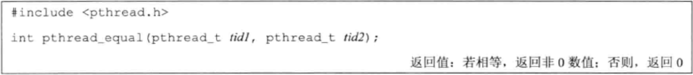
函数说明：
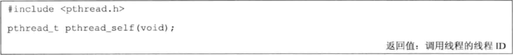
主线程通过线程标识 TID 来给其他线程分配作业。
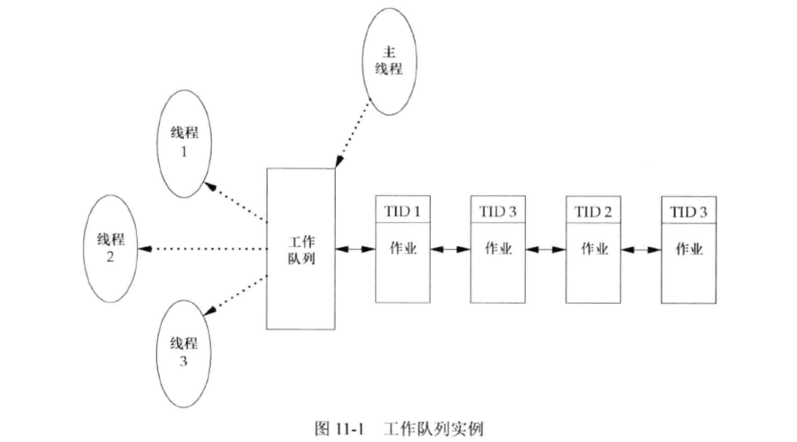
线程创建 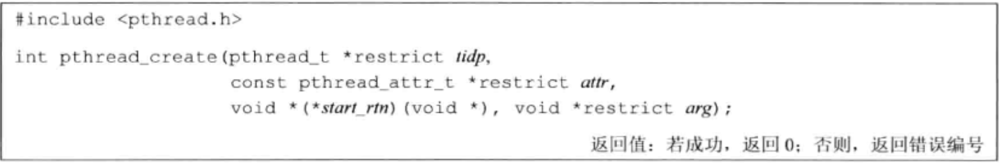
参数说明：
参数名
作用
tidp
线程创建后用于存储新建线程的线程ID
attr
用于定制线程属性，为 NULL 则使用默认属性值
start_rtn
新建线程从 start_rtn 函数的地址开始运行
arg
start_rtn 函数的参数
新建线程可访问进程的地址空间，并且继承调用线程的浮点环境和信号屏蔽字，但是该线程的挂起信号集会被清除。pthread_create”。解决办法在 gcc 编译时添加 “-pthread” 参数。如 “gcc -o test test.c -pthread”
1 2 3 4 5 6 7 8 9 10 11 12 13 14 15 16 17 18 19 20 21 22 23 24 25 26 27 28 29 30 31 32 33 34 35 36 37 38 39 40 41 42 43 44 45 46 #include "apue.h" #include <pthread.h> pthread_t ntid;void printids (const char *s) { pid_t pid; pthread_t tid; pid = getpid(); tid = pthread_self(); printf ("%s pid %lu tid %lu (0x%lx)\n" , s, (unsigned long )pid, (unsigned long )tid, (unsigned long )tid); } void *thr_fn (void *arg) { printids("new thread: " ); return ((void *)0 ); } int print_tid (void ) { int err; err = pthread_create(&ntid, NULL , thr_fn, NULL ); if (err != 0 ) err_exit(err, "can't create thread" ); printids("main thread:" ); sleep(1 ); exit (0 ); }
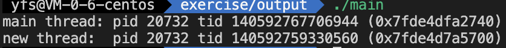
线程终止
调用 exit、_Exit、_exit。整个进程都会终止
以下三种方式终止当前线程。
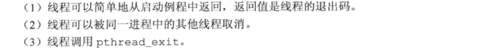
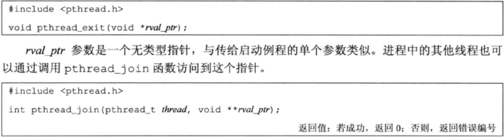
函数说明：
调用线程将一直阻塞，直到指定的线程调用 pthread_exit 、从启动例程中返回 或者被取消 。
调用 pthread_join 后，线程自动被置于分离状态。处于分离状态的线程再次调用 pthread_join 就会失败，并返回 EINVAL。
线程分离状态 ：指定该状态，线程主动与主控线程断开关系。线程结束后（不会产生僵尸线程），其退出状态不由其他线程获取，而直接自己自动释放（自己清理掉PCB的残留资源）。
参数说明：
1 2 3 4 5 6 7 8 9 10 11 12 13 14 15 16 17 18 19 20 21 22 23 24 25 26 27 28 29 30 31 32 33 34 35 36 37 38 39 40 41 42 43 44 45 46 47 48 49 50 51 52 53 #include "apue.h" #include <pthread.h> #include "ugid_functions.h" void *thr_fn1 (void *arg) { printf ("thread 1 returning\n" ); sleep(5 ); return ((void *)1 ); } void *thr_fn2 (void *arg) { printf ("thread 2 exiting\n" ); pthread_exit((void *)2 ); } int test_pthread_join (void ) { int err; pthread_t tid1, tid2; void *tret; err = pthread_create(&tid1, NULL , thr_fn1, NULL ); if (err != 0 ) err_exit(err, "can't create thread 1" ); err = pthread_create(&tid2, NULL , thr_fn2, NULL ); if (err != 0 ) err_exit(err, "can't create thread 2" ); print_cur_time(); err = pthread_join(tid1, &tret); print_cur_time(); if (err != 0 ) err_exit(err, "can't join with thread 1" ); printf ("thread 1 exit code %ld\n" , (long )tret); err = pthread_join(tid2, &tret); if (err != 0 ) err_exit(err, "can't join with thread 2" ); printf ("thread 2 exit code %ld\n" , (long )tret); exit (0 ); } thread 1 returning thread 2 exiting 2022 -10 -16 10 :30 :38 2022 -10 -16 10 :30 :43 thread 1 exit code 1 thread 2 exit code 2
分配在栈上
1 2 3 4 5 6 7 8 9 10 11 12 13 14 15 16 17 18 19 20 21 22 23 24 25 26 27 28 29 30 31 32 33 34 35 36 37 38 39 40 41 42 43 44 45 46 47 48 49 50 51 52 53 54 55 56 57 58 59 60 61 62 63 64 65 66 67 68 69 70 71 72 #include "apue.h" #include <pthread.h> struct foo { int a, b, c, d; }; void printfoo (const char *s, const struct foo *fp) { printf ("%s" , s); printf (" structure at 0x%lx\n" , (unsigned long )fp); printf (" foo.a = %d\n" , fp->a); printf (" foo.b = %d\n" , fp->b); printf (" foo.c = %d\n" , fp->c); printf (" foo.d = %d\n" , fp->d); } void *thr_fn1_1 (void *arg) { struct foo foo =1 , 2 , 3 , 4 }; printfoo("thread 1:\n" , &foo); pthread_exit((void *)&foo); } void *thr_fn2_2 (void *arg) { printf ("thread 2: ID is %lu\n" , (unsigned long ) pthread_self()); pthread_exit((void *)0 ); } int badexit2 (void ) { int err; pthread_t tid1, tid2; struct foo *fp ; err = pthread_create(&tid1, NULL , thr_fn1_1, NULL ); if (err != 0 ) err_exit(err, "can't create thread 1" ); err = pthread_join(tid1, (void *)&fp); if (err != 0 ) err_exit(err, "can't join with thread 1" ); sleep(1 ); printf ("parent starting second thread\n" ); err = pthread_create(&tid2, NULL , thr_fn2_2, NULL ); if (err != 0 ) err_exit(err, "can't create thread 2" ); sleep(1 ); printfoo("parent:\n" , fp); exit (0 ); } thread 1 : structure at 0x7ffff77eff00 foo.a = 1 foo.b = 2 foo.c = 3 foo.d = 4 parent starting second thread thread 2 : ID is 140737345685248 parent: structure at 0x7ffff77eff00 foo.a = 1 foo.b = 2 foo.c = 1 foo.d = 0
使用 malloc 分配
1 2 3 4 5 6 7 8 9 10 11 12 13 14 15 16 17 18 19 20 21 22 23 24 25 26 27 28 29 30 31 32 33 34 35 36 37 38 39 40 41 42 43 44 45 46 47 48 49 50 51 52 53 54 55 56 57 58 59 60 61 62 63 64 65 66 67 #include "apue.h" #include <pthread.h> struct foo { int a, b, c, d; }; void printfoo_1 (const char *s, const struct foo *fp) { fputs (s, stdout ); printf (" structure at 0x%lx\n" , (unsigned long )fp); printf (" foo.a = %d\n" , fp->a); printf (" foo.b = %d\n" , fp->b); printf (" foo.c = %d\n" , fp->c); printf (" foo.d = %d\n" , fp->d); } void *thr_fn1_2 (void *arg) { struct foo *fp ; if ((fp = malloc (sizeof (struct foo))) == NULL ) err_sys("can't allocate memory" ); fp->a = 1 ; fp->b = 2 ; fp->c = 3 ; fp->d = 4 ; printfoo_1("thread:\n" , fp); printf ("thr_fn1_2() fp: %lx\n" , fp); return ((void *)fp); } int goodexit (void ) { int err; pthread_t tid1; struct foo *fp ; err = pthread_create(&tid1, NULL , thr_fn1_2, NULL ); if (err != 0 ) err_exit(err, "can't create thread 1" ); err = pthread_join(tid1, (void *)&fp); if (err != 0 ) err_exit(err, "can't join with thread 1" ); printfoo_1("parent:\n" , fp); printf ("goodexit() fp: %lx\n" , fp); exit (0 ); } thread: structure at 0x7ffff00008c0 foo.a = 1 foo.b = 2 foo.c = 3 foo.d = 4 thr_fn1_2() fp: 7f fff00008c0 parent: structure at 0x7ffff00008c0 foo.a = 1 foo.b = 2 foo.c = 3 foo.d = 4 goodexit() fp: 7f fff00008c0
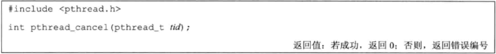
函数说明： 请求 取消同一进程中的其他线程。默认情况下，pthread_cancel 函数会使得由 tid 标识的线程的行为表现为如同调用了参数为 PTHREAD_CANCELED 的 pthread_exit 函数。但是线程可以选择忽略取消或者控制如何被取消。
线程清理处理程序
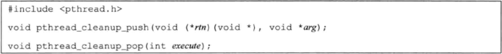
多个清理处理程序记录在栈中，其执行顺序与注册时相反。
当线程执行以下动作时，清理函数 rtn 是由 pthread_cleanup_push 函数调度的，调用时只有一个参数 arg：
调用 pthread_exit 时
响应取消请求时
用非零 execute 参数调用 pthread_cleanup_pop 时
若 execute 参数设置为 0，清理函数将不被调用，但当发生上述情况时 pthread_cleanup_pop 都会删除上次 pthread_cleanup_push 调用建立的清理处理程序。
1 2 3 4 5 6 7 8 9 10 11 12 13 14 15 16 17 18 19 20 21 22 23 24 25 26 27 28 29 30 31 32 33 34 35 36 37 38 39 40 41 42 43 44 45 46 47 48 49 50 51 52 53 54 55 56 57 58 59 60 61 62 63 64 65 66 67 68 69 70 #include "apue.h" #include <pthread.h> void cleanup (void *arg) { printf ("cleanup: %s\n" , (char *)arg); } void *thr_fn1_3 (void *arg) { printf ("thread 1 start\n" ); pthread_cleanup_push(cleanup, "thread 1 first handler" ); pthread_cleanup_push(cleanup, "thread 1 second handler" ); printf ("thread 1 push complete\n" ); if (arg) return ((void *)1 ); pthread_cleanup_pop(0 ); pthread_cleanup_pop(0 ); return ((void *)1 ); } void *thr_fn2_3 (void *arg) { printf ("thread 2 start\n" ); pthread_cleanup_push(cleanup, "thread 2 first handler" ); pthread_cleanup_push(cleanup, "thread 2 second handler" ); printf ("thread 2 push complete\n" ); if (arg) pthread_exit((void *)2 ); pthread_cleanup_pop(0 ); pthread_cleanup_pop(0 ); pthread_exit((void *)2 ); } int test_cleanup (void ) { int err; pthread_t tid1, tid2; void *tret; err = pthread_create(&tid1, NULL , thr_fn1_3, (void *)1 ); if (err != 0 ) err_exit(err, "can't create thread 1" ); err = pthread_create(&tid2, NULL , thr_fn2_3, (void *)1 ); if (err != 0 ) err_exit(err, "can't create thread 2" ); err = pthread_join(tid1, &tret); if (err != 0 ) err_exit(err, "can't join with thread 1" ); printf ("thread 1 exit code %ld\n" , (long )tret); err = pthread_join(tid2, &tret); if (err != 0 ) err_exit(err, "can't join with thread 2" ); printf ("thread 2 exit code %ld\n" , (long )tret); exit (0 ); } thread 1 start thread 1 push complete thread 2 start thread 2 push complete thread 1 exit code 1 cleanup: thread 2 second handler cleanup: thread 2 first handler thread 2 exit code 2
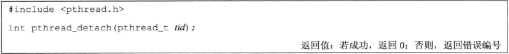
一般情况下，线程终止后，其终止状态一直保留到其他线程调用 pthread_join 获取它的状态为止（或者进程终止被回收了）。当线程设置为 detach 状态后，一旦终止它所占用的资源立即就被回收，而不保留终止状态。不能对一个已经处于 detach 状态的线程调用 pthread_join，否则返回 EINVAL(22) 错误
1 2 3 4 5 6 7 8 9 10 11 12 13 14 15 16 17 18 19 20 21 22 23 24 25 26 27 28 29 30 31 32 33 34 35 36 37 38 39 40 41 42 43 44 45 46 47 48 49 50 51 52 53 54 55 56 57 58 59 60 61 62 63 64 65 66 67 68 69 70 71 #include <stdio.h> #include <stdlib.h> #include <unistd.h> #include <string.h> #include <pthread.h> void *tfn (void *arg) { int n = 3 ; while (n--) { printf ("thread count %d\n" , n); sleep(1 ); } pthread_exit((void *)1 ); } int test_detach (void ) { pthread_t tid; void *tret; int err; #if 0 pthread_attr_t attr; pthread_attr_init(&attr); pthread_attr_setdetachstate(&attr, PTHREAD_CREATE_DETACHED); pthread_create(&tid, &attr, tfn, NULL ); #else pthread_create(&tid, NULL , tfn, NULL ); pthread_detach(tid); #endif while (1 ) { err = pthread_join(tid, &tret); printf ("-------------err= %d\n" , err); if (err != 0 ) fprintf (stderr , "thread_join error: %s\n" , strerror(err)); else fprintf (stderr , "thread exit code %d\n" , (int )tret); sleep(1 ); } return 0 ; } thread count 2 -------------err= 22 thread_join error: Invalid argument thread count 1 -------------err= 22 thread_join error: Invalid argument thread count 0 -------------err= 22 thread_join error: Invalid argument -------------err= 22 thread_join error: Invalid argument -------------err= 22 thread_join error: Invalid argument -------------err= 22 thread_join error: Invalid argument ... ...
线程同步 变量增量操作通常分为 3 步：
从内存单元读入寄存器
在寄存器中对变量做增量操作
把新的值写回内存单元
这三步操作并不是原子性的，因此具有并发问题：
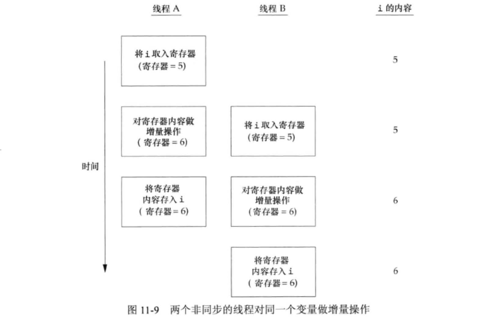
互斥量 在访问共享资源前对互斥量加锁，访问完成后释放。任何对加锁的互斥量再次加锁都会被阻塞，直到互斥量释放锁为止。若释放互斥量时有多个线程阻塞，那么所有阻塞线程都会变成可运行状态，第一个变为运行状态的线程就可以对互斥量加锁。
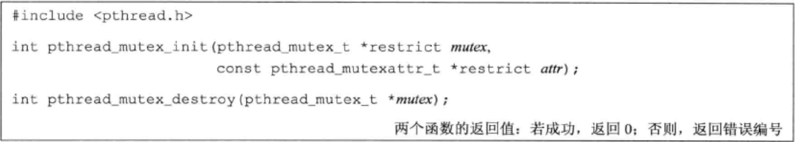
互斥变量使用数据类型 pthread_mutex_t 来表示。在使用互斥量前应先初始化：
静态分配的互斥量可以以直接设置为常量 PTHREAD_MUTEX_INITIALIZER 的方式初始化。
或直接使用 pthread_mutex_init() 初始化。
动态分配(通过调用malloc函数)的互斥量，在释放前需调用 pthread_mutex_destroy。
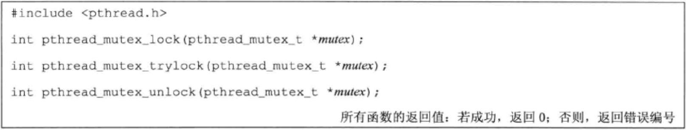
pthread_mutex_lock 同步获取锁（获取失败会阻塞，直到成功）
pthread_mutex_trylock 尝试获取锁，获取失败后不会阻塞直接返回 EBUSY
1 2 3 4 5 6 7 8 9 10 11 12 13 14 15 16 17 18 19 20 21 22 23 24 25 26 27 28 29 30 31 32 33 34 35 36 37 38 39 40 41 42 43 44 45 46 47 48 49 #include <stdlib.h> #include <pthread.h> struct foo { int f_count; pthread_mutex_t f_lock; int f_id; }; struct foo *foo_alloc (int id) { struct foo *fp ; if ((fp = malloc (sizeof (struct foo))) != NULL ) { fp->f_count = 1 ; fp->f_id = id; if (pthread_mutex_init(&fp->f_lock, NULL ) != 0 ) { free (fp); return (NULL ); } } return (fp); } void foo_hold (struct foo *fp) { pthread_mutex_lock(&fp->f_lock); fp->f_count++; pthread_mutex_unlock(&fp->f_lock); } void foo_rele (struct foo *fp) { pthread_mutex_lock(&fp->f_lock); if (--fp->f_count == 0 ) { pthread_mutex_unlock(&fp->f_lock); pthread_mutex_destroy(&fp->f_lock); free (fp); } else { pthread_mutex_unlock(&fp->f_lock); } }
避免死锁 以相同顺序对互斥量进行加锁。
函数 pthread_mutex_timedlock() 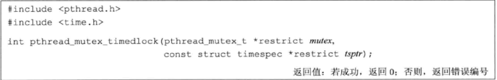
作用类似于 pthread_mutex_lock() 但 pthread_mutex_timedlock 会在指定的阻塞时间达到后返回，若不能获取锁则返回 ETIMEDOUT。
读写锁
读写锁又称 共享互斥锁 。
读写锁状态：
读模式下的加锁状态（读锁，读写冲突）
写模式下的加锁状态（写锁，读写、写写冲突）
不加锁状态
处于读锁状态时，当来一个写锁时，写锁后续的读锁也会被阻塞。原因是防止读线程导致写线程饥饿。
读写锁适用于读次数远大于写的情况。
与互斥量相比，读写锁在使用之前必须初始化，在释放它们底层的内存之前必须销毁。
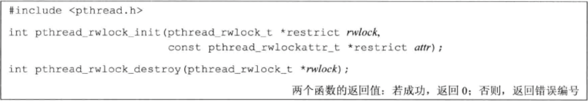
函数说明：
参数说明：
attr：用于设置读写锁的属性，为 NULL 时使用默认属性。若不需要自定义读写锁的属性，可以直接使用 PTHREAD_RWLOCK_INITIALIZER 常量进行初始化。
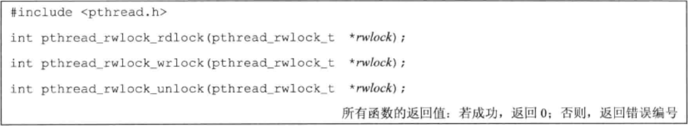
函数说明：
pthread_rwlock_rdlock：加读锁
pthread_rwlock_wrlock：加写锁
pthread_rwlock_unlock：解除读 / 写锁
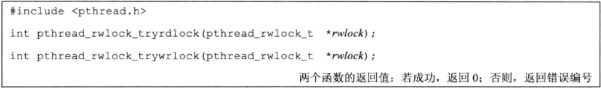
返回值说明：
带有超时的读写锁 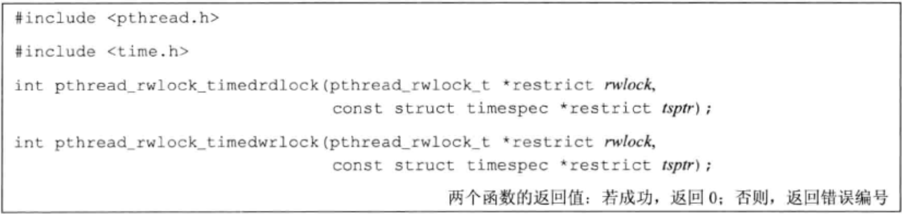
参数说明：
tsptr：指定线程阻塞时间，阻塞时间到达后，若成功获取锁则返回 0，否则返回 ETIMEDOUT。超时时间应指定为绝对时间。
条件变量
条件变量与互斥量一起使用时，允许线程以无竞争 的方式等待特定的条件发生。
条件变量使用数据类型 pthread_cond_t 来存取。
条件变量的初始化：
静态分配的条件变量：PTHREAD_COND_INITIALIZER 直接赋值
动态分配：使用 pthread_cond_init() 初始化。
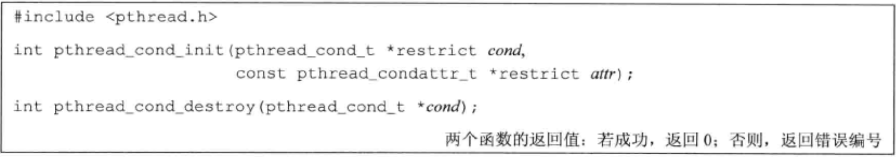
pthread_cond_destroy 需要在条件变量底层的内存空间释放前调用。
参数 attr 指定条件变量的属性，为 NULL 表示使用默认属性。
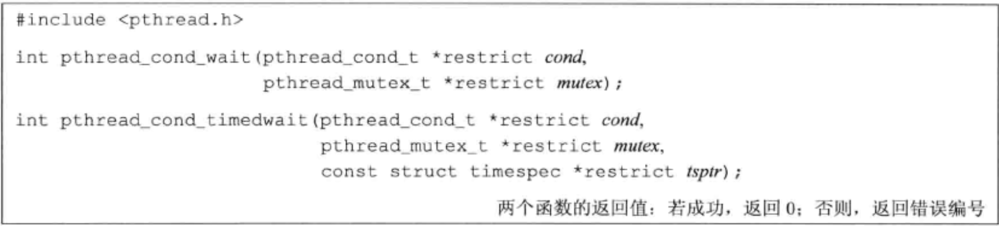
函数说明：
pthread_cond_timedwait 函数：计时等待条件变量。若超时条件仍未满足，pthread_cond_timedwait 将重新获取互斥量，然后返回 ETIMEDOUT 。
从 pthread_cond_wait 或者 pthread_cond_timedwait 调用成功返回时，线程需要重新计算条件，因为另一个线程可能已经在运行并改变了条件。
这里有个疑问：pthread_cond_wait 返回时会重新获取互斥量 mutex，若其他线程已经运行，pthread_cond_wait 应该无法再次获取 mutex 才对的呀。为啥要重新判断条件呢？
参数说明：
示例：
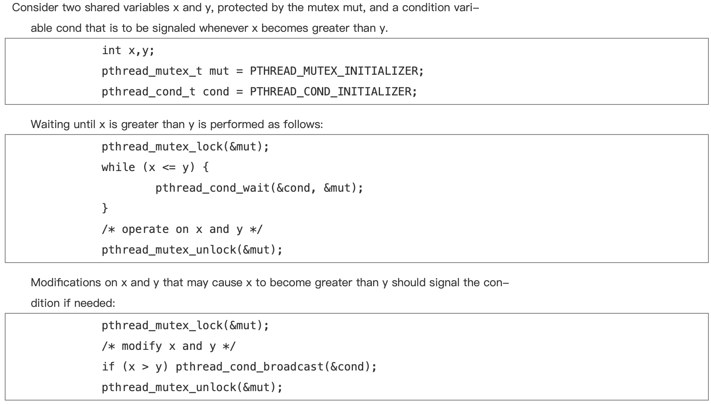
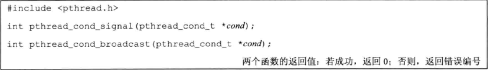
函数说明：
1 2 3 4 5 6 7 8 9 10 11 12 13 14 15 16 17 18 19 20 21 22 23 24 25 26 27 28 29 30 31 32 33 34 35 36 37 38 39 40 #include <pthread.h> struct msg { struct msg *m_next ; }; struct msg *workq ;pthread_cond_t qready = PTHREAD_COND_INITIALIZER;pthread_mutex_t qlock = PTHREAD_MUTEX_INITIALIZER;void process_msg (void ) { struct msg *mp ; for (;;) { pthread_mutex_lock(&qlock); while (workq == NULL ) pthread_cond_wait(&qready, &qlock); mp = workq; workq = mp->m_next; pthread_mutex_unlock(&qlock); } } void enqueue_msg (struct msg *mp) { pthread_mutex_lock(&qlock); mp->m_next = workq; workq = mp; pthread_mutex_unlock(&qlock); pthread_cond_signal(&qready); }
自旋锁
适用于锁被持有的时间短，且不希望花费时间在重新调度上。
一般用在实时调度中。
若发生中断，只能使用自旋锁。自旋锁会阻塞中断，这样中断处理程序就不会让系统陷入死锁状态（中断处理程序也会获取自旋锁，可以将中断处理程序想成是另一种抢占）参考教程
运行在 分时调度类 中的用户层线程在两种情况下可被取消调度。在这种情况下，若线程拥有自旋锁，他就会进入休眠，阻塞在锁上的其他线程自旋的时间可能会比预期时间更长：
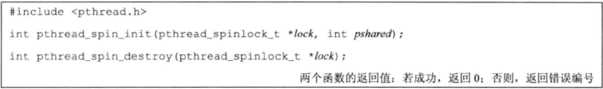
参数说明：
pshared：表示进程共享属性。PTHREAD_PROCESS_SHARED 表示自旋锁能被可以访问锁底层内存的线程所获取，即便那些线程属于不同的进程；PTHREAD_PROCESS_PRIVATE：自旋锁只能被初始化该锁的进程内部的线程所访问。
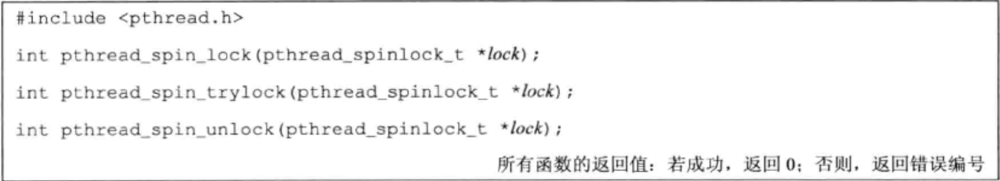
pthread_spin_trylock 在获取自旋锁失败时，返回 EBUSY。
不要调用在持有自旋锁的情况下可能会进入休眠状态的函数 。否则会浪费 CPU （其他线程获取自旋锁需要等待的时间就延长了）。
屏障 屏障允许每个线程等待，直到所有合作线程都到达某一点，然后从该点继续执行。 pthread_join 函数就是一种屏障。
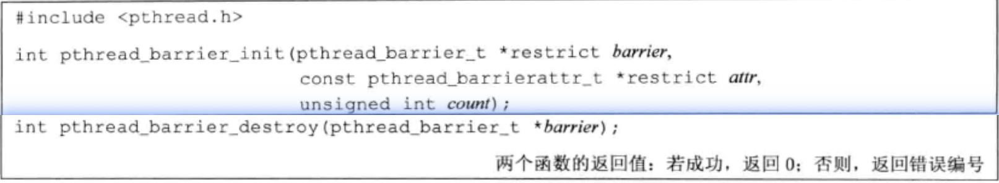
参数说明：
count：在允许所有线程继续运行之前，必须到达屏障的线程数目
attr：指定屏障对象的属性。为 NULL 表示使用默认属性。
函数说明：
pthread_barrier_init 函数为屏障分配资源
pthread_barrier_destroy 函数释放相应资源
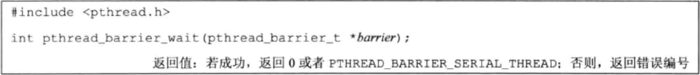
函数说明：
对于任一线程，pthread_barrier_wait 函数返回了 PTHREAD_BARRIER_SERIAL_THREAD，可以将其看作是主线程，他可以工作在其他所有线程已完成的工作结果上。剩下的线程看到的返回值为 0。
屏障重用时，屏障计数不会变，除非使用 pthread_barrier_destroy 销毁后，又使用新计数值调用 pthread_barrier_init 。
1 2 3 4 5 6 7 8 9 10 11 12 13 14 15 16 17 18 19 20 21 22 23 24 25 26 27 28 29 30 31 32 33 34 35 36 37 38 39 40 41 42 43 44 45 46 47 48 49 50 51 52 53 54 55 56 57 58 59 60 61 62 63 64 65 66 67 68 69 70 71 72 73 74 75 76 77 78 79 80 81 82 83 84 85 86 87 88 89 90 91 92 93 94 95 96 97 98 99 100 101 102 103 104 105 106 107 108 109 110 111 112 113 114 115 116 117 118 119 120 121 #include "apue.h" #include <pthread.h> #include <limits.h> #include <sys/time.h> #define NTHR 8 #define NUMNUM 8000000L #define TNUM (NUMNUM/NTHR) long nums[NUMNUM];long snums[NUMNUM];pthread_barrier_t b;#ifdef SOLARIS #define heapsort qsort #else extern int heapsort (void *, size_t , size_t , int (*)(const void *, const void *)) ;#endif int complong (const void *arg1, const void *arg2) { long l1 = *(long *)arg1; long l2 = *(long *)arg2; if (l1 == l2) return 0 ; else if (l1 < l2) return -1 ; else return 1 ; } void *thr_fn (void *arg) { long idx = (long )arg; heapsort(&nums[idx], TNUM, sizeof (long ), complong); pthread_barrier_wait(&b); return ((void *)0 ); } void merge () { long idx[NTHR]; long i, minidx, sidx, num; for (i = 0 ; i < NTHR; i++) idx[i] = i * TNUM; for (sidx = 0 ; sidx < NUMNUM; sidx++) { num = LONG_MAX; for (i = 0 ; i < NTHR; i++) { if ((idx[i] < (i+1 )*TNUM) && (nums[idx[i]] < num)) { num = nums[idx[i]]; minidx = i; } } snums[sidx] = nums[idx[minidx]]; idx[minidx]++; } } int main () { unsigned long i; struct timeval start , end ; long long startusec, endusec; double elapsed; int err; pthread_t tid; srandom(1 ); for (i = 0 ; i < NUMNUM; i++) nums[i] = random(); gettimeofday(&start, NULL ); pthread_barrier_init(&b, NULL , NTHR+1 ); for (i = 0 ; i < NTHR; i++) { err = pthread_create(&tid, NULL , thr_fn, (void *)(i * TNUM)); if (err != 0 ) err_exit(err, "can't create thread" ); } pthread_barrier_wait(&b); merge(); gettimeofday(&end, NULL ); startusec = start.tv_sec * 1000000 + start.tv_usec; endusec = end.tv_sec * 1000000 + end.tv_usec; elapsed = (double )(endusec - startusec) / 1000000.0 ; printf ("sort took %.4f seconds\n" , elapsed); for (i = 0 ; i < NUMNUM; i++) printf ("%ld\n" , snums[i]); exit (0 ); }